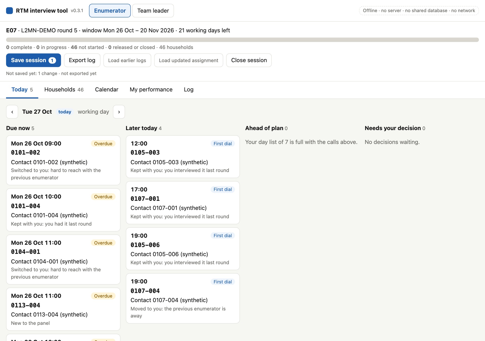
The RTM interview tool is one web page, rtm_interview_tool.html, that runs in a web browser on the
enumerator's or the leader's own computer. It has two views, chosen with the buttons at the top of the page:
The tool follows the handbook's practice. The default way of assigning households keeps the same enumerator, rotates a planned share of households each round, and switches the enumerator for a household that becomes hard to reach (Section 3.5.3). Each household's first dial is planned at the hour of its last interview (Section 3.5.2), early in the round's window (Section 3.4). The definitions of a dial, a complete and an enumerator-day are those of Box 3.0.
Because nothing is shared over a network, the work moves in files. Three kinds of folder keep them apart:
| Folder | Who can read it | What goes in it |
|---|---|---|
| The enumerator's own folder | That enumerator and the leader | The enumerator's assignment file, and their saved sessions |
| The common folder | The whole team | The enumerators' exported logs (.csv and .json). They hold household IDs, times and results, but no names or phone numbers |
| The leader's own folder | The leader | The household list, the leader's session, the round's manifest and outputs, contacts files |
interviews.csv and calendar.csv for the handbook's round template, and the
merge report.samples/ holds the synthetic program L2MN-DEMO used in this
manual: assignment files for round 5 in samples/round05/, and the leader's inputs and the
enumerators' exports in samples/leader/. Phone numbers there use the invalid country code +000.Your team leader gives you an assignment file, named like E07_assignment_R05.json (your enumerator
ID and the round). It lists your households for the round, with their phone numbers, their history and the plan
for each one's first dial.
rtm_interview_tool.html. The Enumerator view opens.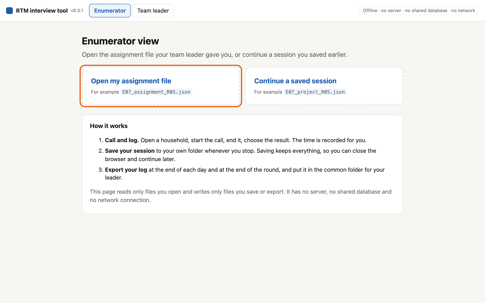
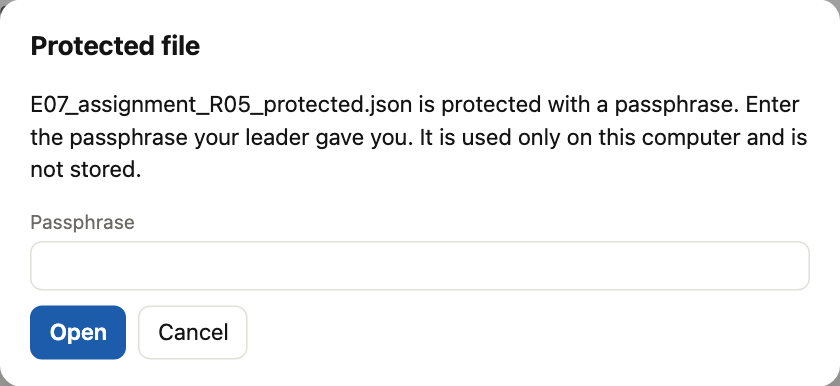
To carry on where you stopped, use Continue a saved session instead (A18).
The summary at the top gives your enumerator ID, the program and round, the round's window and the working days left. The bar shows the share of your households completed. Under it are the main buttons:
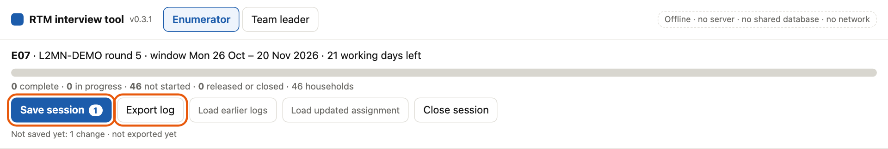
| Button | What it does | See |
|---|---|---|
| Save session | Saves everything you logged into one file in your own folder, so you can close the browser and continue later | A18 |
| Export log | Writes your call log as a CSV and a JSON file for the common folder | A19 |
| Load earlier logs | Adds your exports from earlier rounds, to compare your performance | A16 |
| Load updated assignment | Opens a new version of your assignment for the same round, keeping what you logged | A20 |
| Close session | Closes the round on this screen; with unsaved changes it offers to save first | A18 |
The line under the buttons says when you last saved and exported. The tabs below lead to Today, Households, Calendar, My performance and Log.
The Today tab lists the calls to make, in four columns:
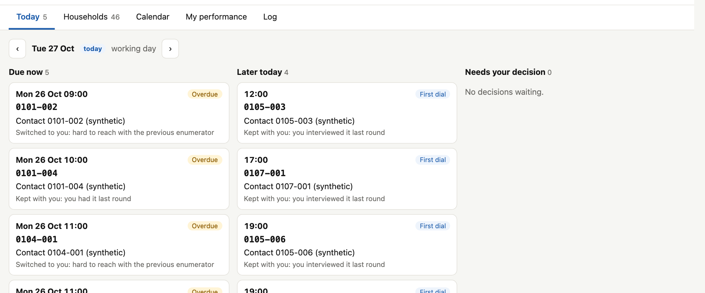
A label on each card says what kind of call it is: First dial, Redial, Callback (an agreed time) or Overdue. Use the arrows beside the date to look at another day. Click a card to open the household.
Clicking a household opens its panel on the right. From the top:
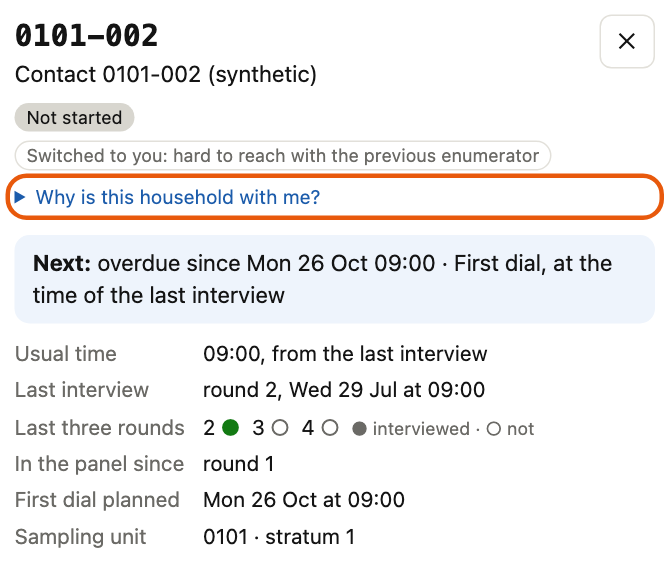
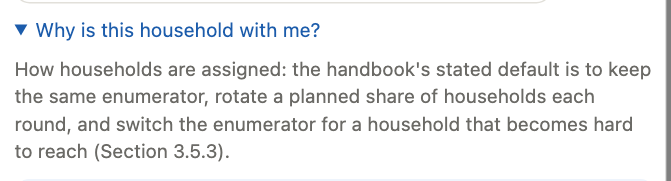
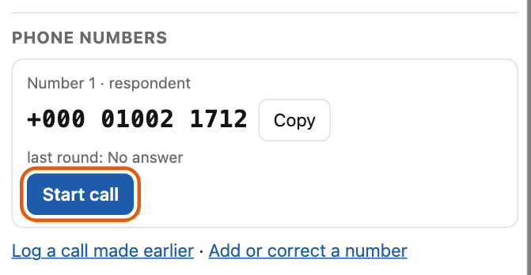
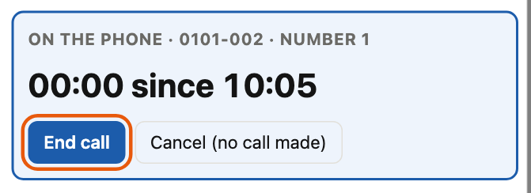
After End call, the result form opens.
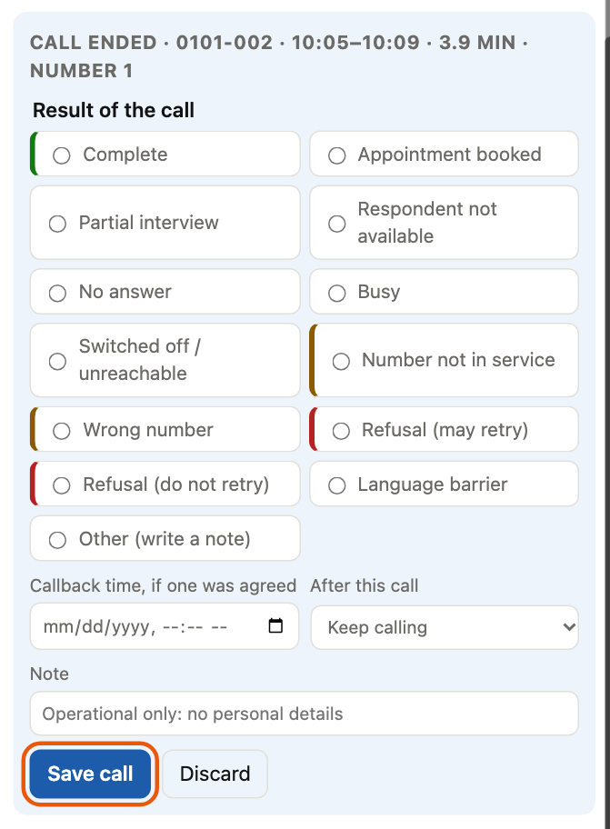
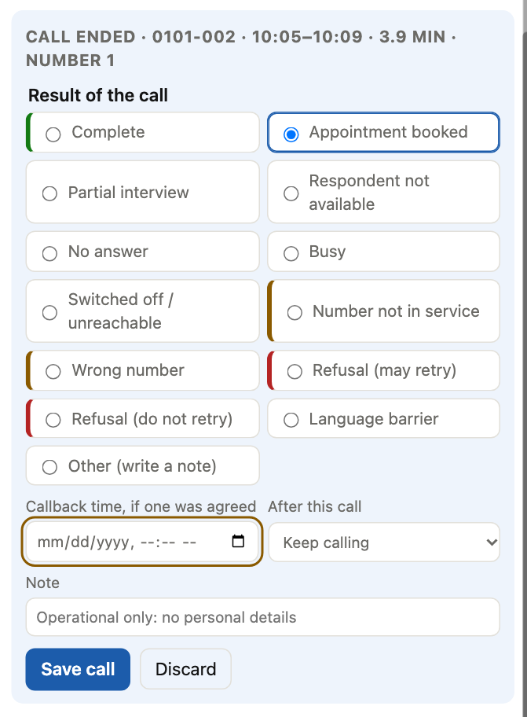
A call saved with a callback time moves to that time. It appears in Later today (or on its day) with a Callback label, ahead of the tool's own suggestions.
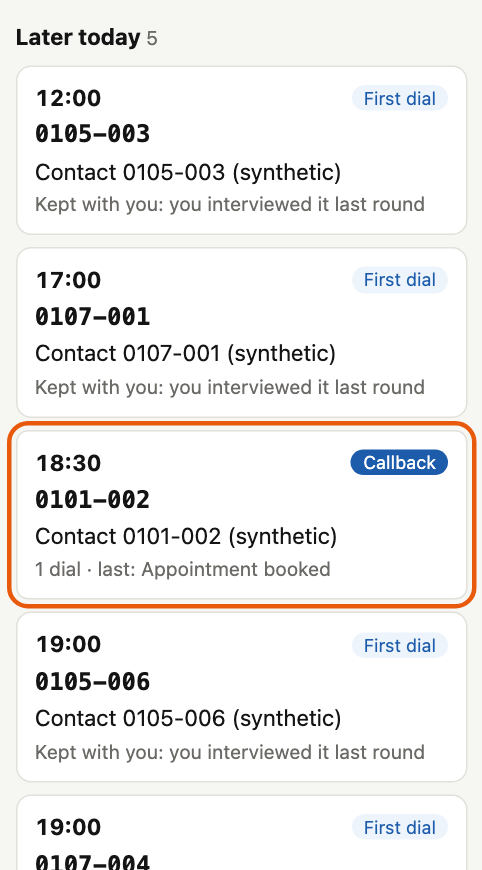
Without a callback, the tool suggests the next call itself: the same day at least two hours after the last dial and within the call hours, or else the next working day near the household's usual hour.
Box 3.0 counts a complete only when the interview lasted at least 3 minutes. A shorter one counts as an appointment contact, so the household stays open and the tool tells you why.
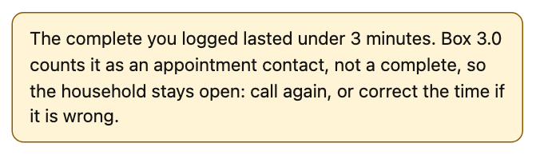
If you made a call without the timer, for example on another phone, use Log a call made earlier under the phone numbers. Enter which number, when the call started and how many minutes it lasted, then the result as in A6. The log keeps both the call's own time and the time you entered it.
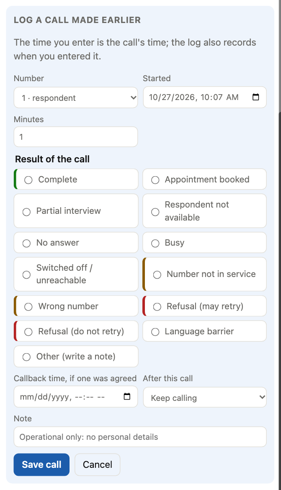
Nothing in the log is ever deleted. To fix a mistake, find the call under Calls this round and click Correct or void:
Write why you are correcting it (required) and click Save correction. The original entry stays in the log, marked as corrected or voided. An action such as a release is undone the same way, with Undo.
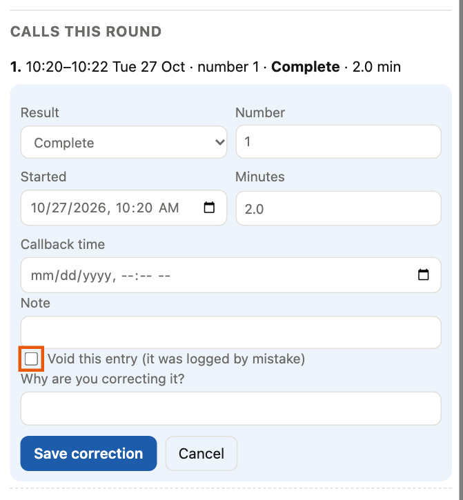
The Actions at the bottom of a household's panel are case actions, not call results:
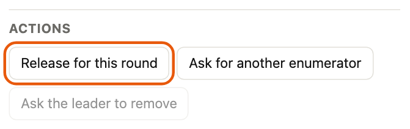
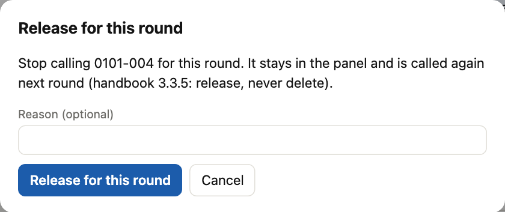
If a respondent gives a new number, or a number is wrong, click Add or correct a number. Choose which number (or a new one) and whether you correct it or mark it as not working, type the number and whose it is, and click Save number. The new number can be dialled at once. It goes to your leader in a separate contacts file when you export (A19), never in the log for the common folder.
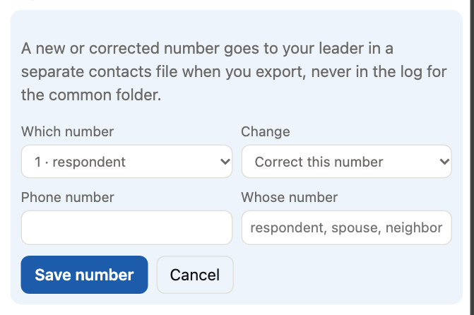
Some households come with replacement households, listed in their panel in the order the sample was drawn. A replacement can be used only when the round's rules allow it, by default after a hard refusal or when no number works. Then:
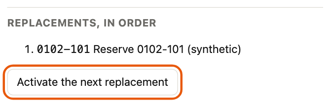
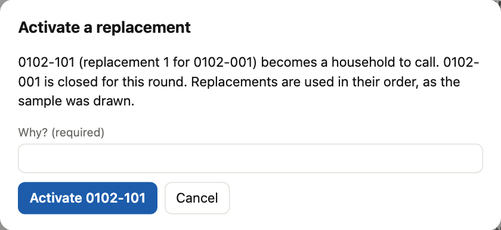
When the button is greyed out, the line beside it says why, for example that replacements are allowed only after a hard refusal or when no number works.
The Households tab lists all your households in a table: their contact, why each is with you, the first dial planned, the number of dials, the last result, the next step and the state. Use the filters above it (open, not started, in progress, complete, released or closed, needs the leader, all) and the search box for an ID or a name. Click a row to open the household.
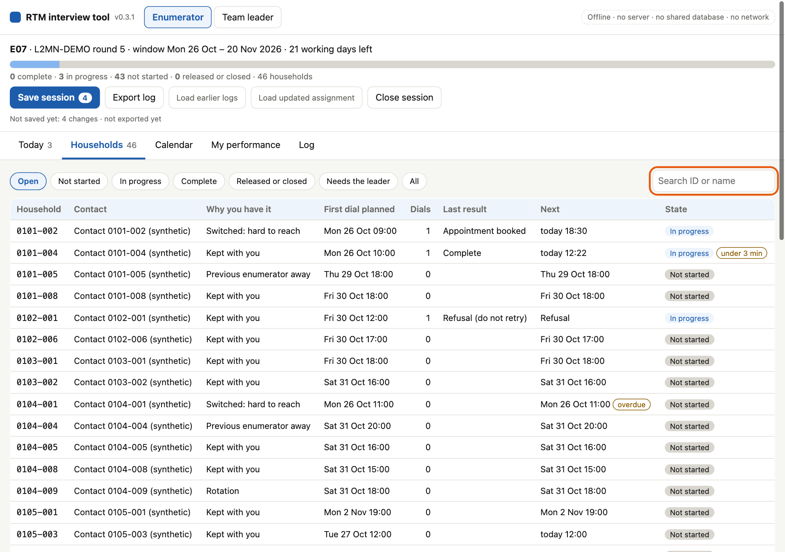
The Calendar shows the round's window month by month. Days inside the window are white; days outside are grey. Hatched days get no calls planned automatically: days the call center does not work, and public holidays. Each day shows the first dials planned, callbacks booked, and the dials made and completes. Click a day to see its calls.
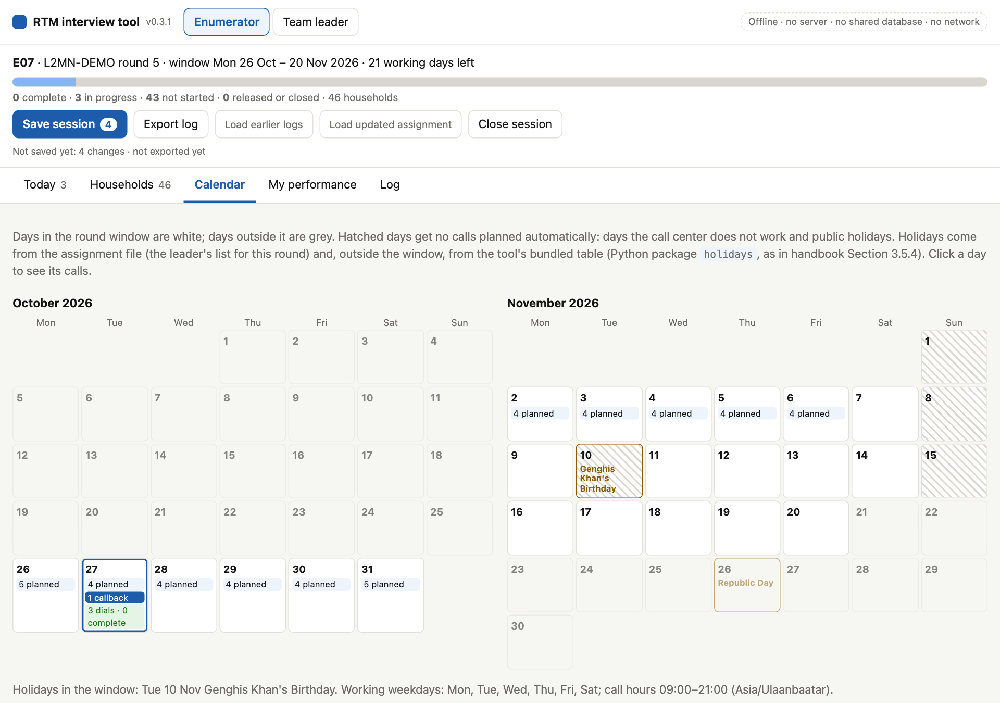
My performance gives your own figures, with the definitions of Box 3.0: dials, completes, success rate, dials per complete, first-dial success, enumerator-days and completes per enumerator-day. The columns compare this round so far with this month, last month and all the logs loaded. Click Load earlier logs and choose your exports from earlier rounds to fill the comparison.
When my calls succeed shows, by hour, the share of your dials on which the interview took place. Hours with fewer than 10 dials are hatched: too few to judge. The plan ahead counts the first dials, redials and callbacks for the coming days.
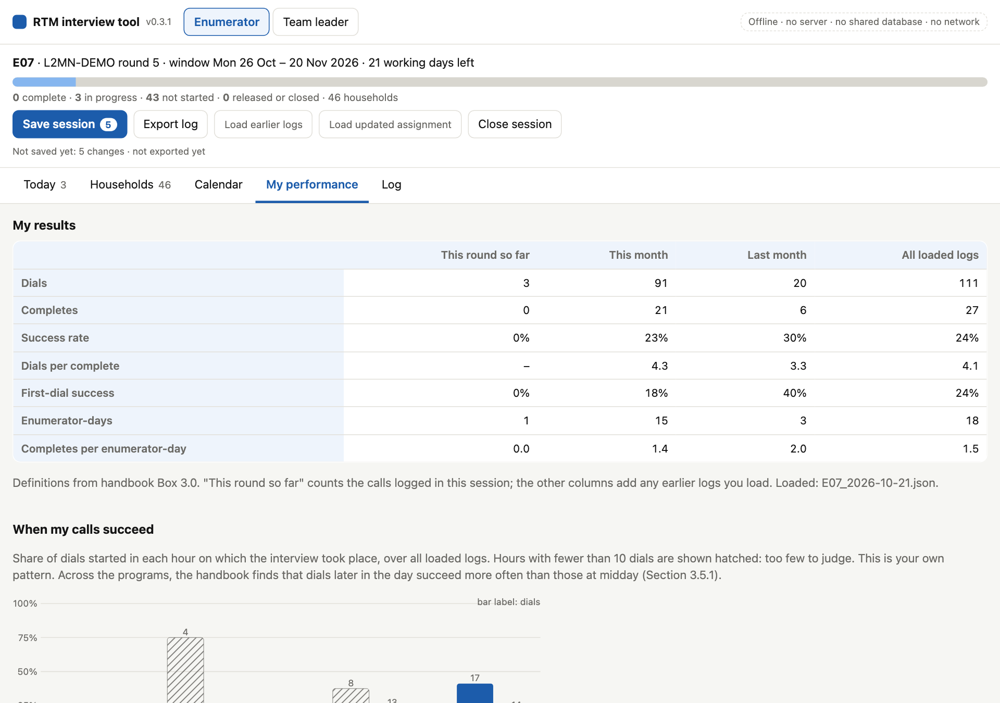
The Log lists every entry in your session: each call, action, correction and number change, who logged it and when. Its integrity check confirms that no entry was changed after it was logged. You cannot edit the log here; corrections are new entries (A10).
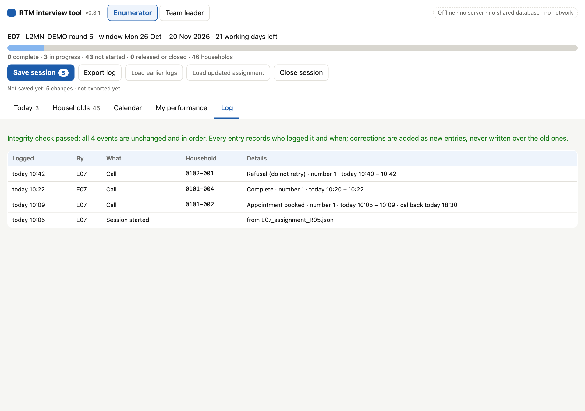
Save your session whenever you stop, and at least every few calls. Click Save session:
E07_project_R05.json, in your own
folder; later saves overwrite it.Keep saved sessions in your own folder, not the common one. If your session file is protected, it is protected with your assignment's passphrase. After ten unsaved changes, a reminder appears.
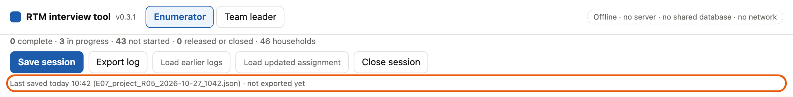
Close session asks first when changes are not saved: Save, then close (the main choice), Close without saving, or Cancel. The browser also warns you before you close the page with unsaved changes.
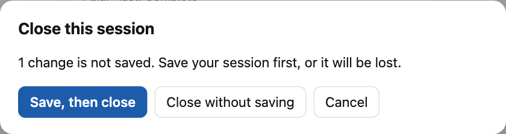
To continue later, open the tool, click Continue a saved session on the start page (Figure A1) and choose your saved session file. Everything comes back, and the tool checks that the file was not changed.
At the end of each day, and at the end of the round, click Export log:
E07_2026-10-27.csv and E07_2026-10-27.json.E07_2026-10-27_contacts.json, is offered. Give it
to your leader directly, never in the common folder.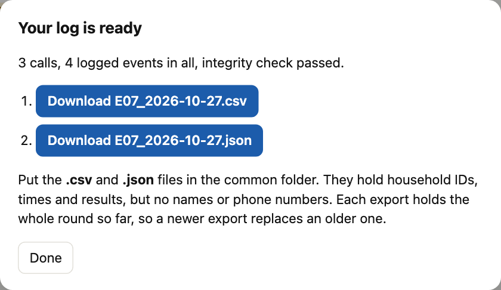
Your leader may send a new version of your assignment during the round, for example after moving households between enumerators so that the round finishes on time. Click Load updated assignment and choose the new file. The tool keeps every call you logged, adds the new households, and marks those no longer yours as “No longer yours”: their calls stay in your log, but you cannot log new ones for them. A file for another enumerator or another round is refused, and so is a file older than the one in your session.
A household moved to you shows who had it before and the calls they made, with the reason “Moved to you mid-round”. Those calls count toward the dial cap: if the previous enumerator made 7 of 8, you have one left. Its first dial is planned for the day of the move, at the household's usual hour. Households you already had keep their plan and history even when the new file does not repeat them.
The page also works on a phone's browser. The columns stack, and a household's panel fills the screen; close it with the ✕ to return to the list.
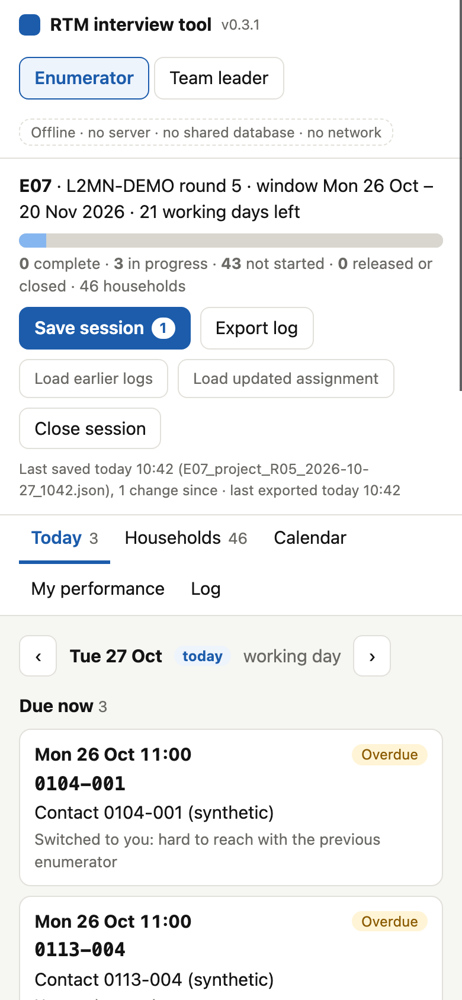
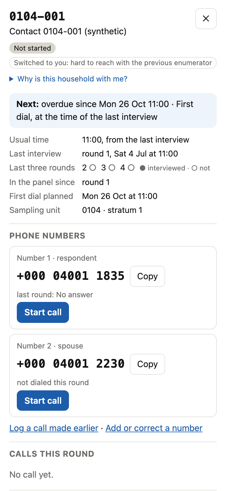
| Message | What to do |
|---|---|
| “Choose the result of the call.” or another missing entry | Fill in the outlined field, then save again |
| “This complete lasted under 3 minutes…” | Call again, or correct the time if it is wrong (A8, A10) |
| “N changes are not saved yet.” | Click Save session |
| A file is protected | Type the passphrase from your leader; it is not stored |
| “… is a saved session, not an assignment.” | Use Continue a saved session instead |
| A file for another enumerator or round is refused | Check with your leader that you have your own file |
Click Team leader at the top of the page. To prepare a new round, fill in Start a round:
L01, and the program code, for example L2MN;To carry on, click Continue a saved leader session and choose your session file (B11). If you only want to import logs for a round you prepared earlier, start the round the same way and open its manifest on the Import tab (B12).
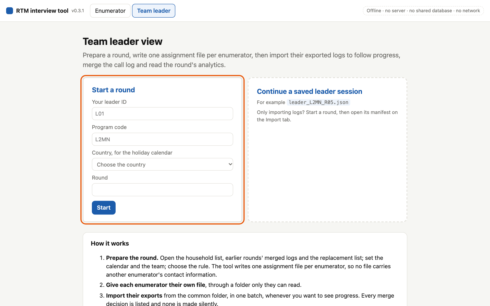
The session opens on Prepare round, eight numbered steps from top to bottom. The other tabs are Import logs, Progress, Call log, Analytics and Risk lists. The number on Save leader session counts the changes not yet saved.
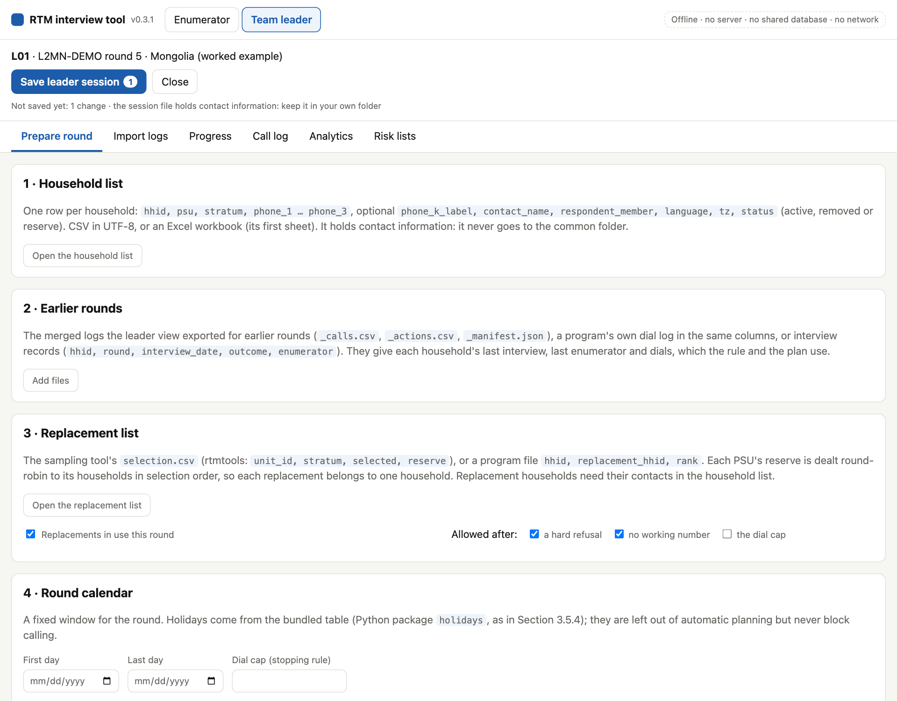
Click Open the household list and choose the program's list: a CSV file in UTF-8, or an Excel workbook (its first sheet). One row per household, with these columns:
| Column | Content |
|---|---|
hhid, psu, stratum | The household's ID, its sampling unit and stratum |
phone_1 … phone_3 | Up to three numbers; phone_k_label says whose each is |
contact_name, respondent_member, language, tz | Optional |
status | active (the default), removed (kept in the list, never deleted) or reserve (a replacement not yet used) |
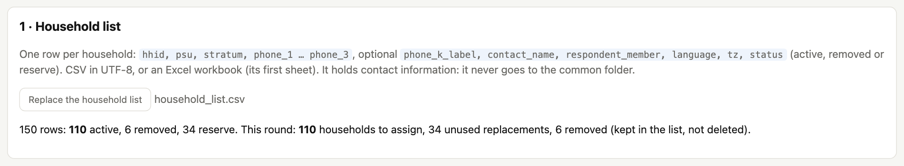
Click Add files and choose the files of earlier rounds, all at once:
_calls.csv, _actions.csv and
_manifest.json); orhhid, round, interview_date, outcome, enumerator.They give each household's last interview, last enumerator and dials, which the rule and the plan use. The table shows, for each round, the households, dials and interviewed households. If a program's own result codes are not the tool's, the tool asks you to map each one once.
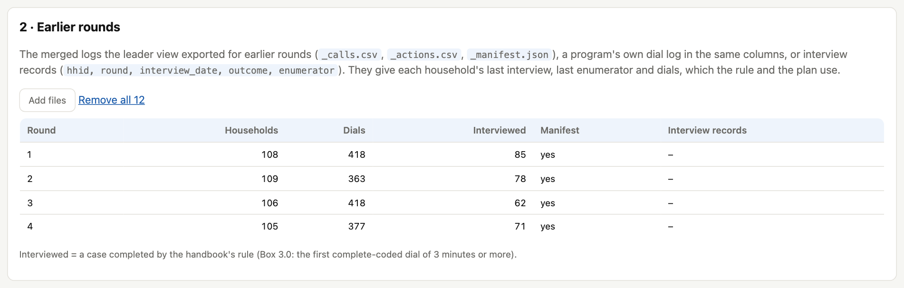
Click Open the replacement list and choose either the sampling tool's selection.csv
(rtmtools: unit_id, stratum, selected, reserve) or a program file with hhid, replacement_hhid,
rank. Each PSU's reserve is dealt in turn to its households in selection order, so each replacement belongs
to one household. Replacement households need their contacts in the household list.
Under the summary, tick Replacements in use this round and choose when they are allowed: after a hard refusal, when no number works, or when the dial cap is reached.
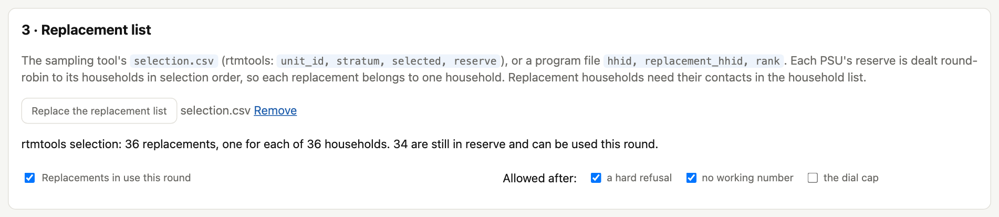
holidays. Tick Call center works for a holiday you will work, remove a day that is
not a holiday, or add a day off, such as a regional or decreed closure. Dates the table estimates, such as
lunar holidays, are labelled; correct them when the official dates are known.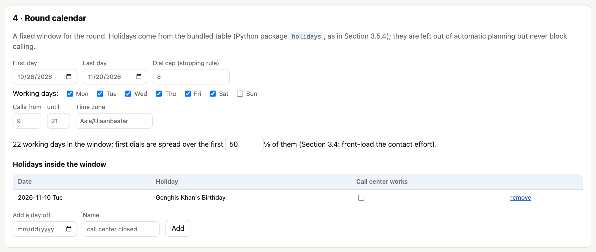
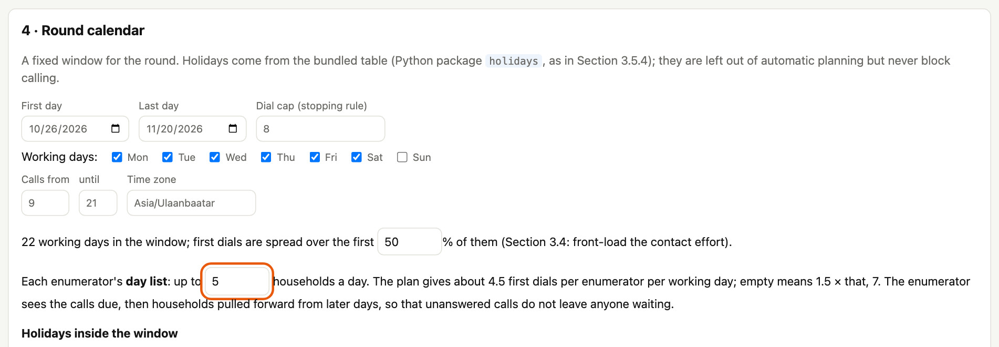
When the window falls in Ramadan, the card also asks for the hour the fast is broken; that hour is kept free of planned calls.
The team comes from the last round's manifest, or is added with Add an enumerator ID. For each enumerator:
Matching criteria. Above the table, the card offers the columns of the household list that can decide who calls
whom: language, and any other column with few distinct values, such as the respondent's sex, a dialect or an
area (add the column to the household list; nothing else changes). Tick a criterion and a column appears in the team
table: type each enumerator's values, several separated by spaces or commas (mn kk). A household then goes
only to an enumerator whose values include the household's; a household without a value can go to anyone. Every
available enumerator needs a value for every criterion ticked. The criteria and the values are written into the
manifest and the assignment files, so the program can say how it assigned, and the next round offers them again.
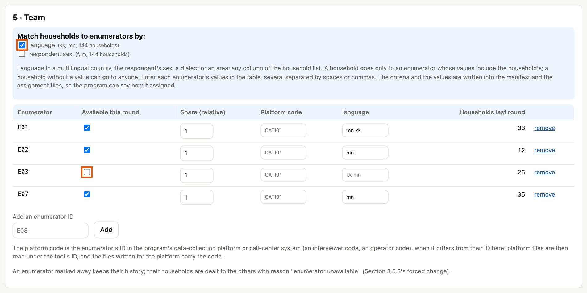
| Rule | What it does | When to use it |
|---|---|---|
| Keep the same enumerator (default) | Each household stays with the enumerator who completed its last interview. A planned share rotates to another enumerator each round, and a hard-to-reach household is switched. New households are dealt at random | Every round after the first: the handbook's stated default (Section 3.5.3) |
| Random | Households dealt at random, mixing strata, in proportion to the shares | The first round, or a round where enumerator effects must be estimated |
| Equal split | Consecutive blocks of the list in a chosen order (PSU, stratum, language or ID), sizes differing by at most one | When enumerators must match a language or an area. Enumerator and area effects then cannot be told apart |
| Share of total | Like equal split or random, with shares that add up to 100% | Part-time or new enumerators |
| Manual | A list of hhid and enumerator_id that you open; households without one, and unknown IDs, are flagged | Special cases |
Under the default rule, enter the rotation share for this round, for example 10%. It has no default: the handbook calls its size “a judgment, not an estimate from these data”. A household is hard to reach when it was not interviewed last round although it received the full dial cap, or when its enumerator asked for a switch.
The seed is written into every file, so the same inputs and seed always give the same assignment. Click Apply the rule. If something is missing, such as the window or the rotation share, the tool lists it above the button.
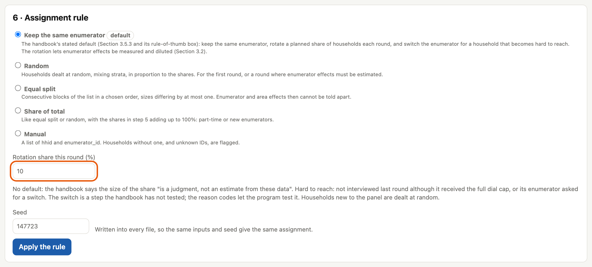
Before any file is written, step 7 shows each enumerator's households: by reason (kept, rotation, hard to reach, enumerator away, new, or by the round's rule), by stratum, and in total. It also shows the expected dials, computed from each household's dials last round, against the enumerator's target share.
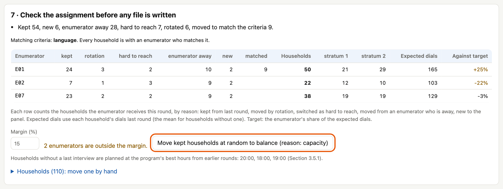
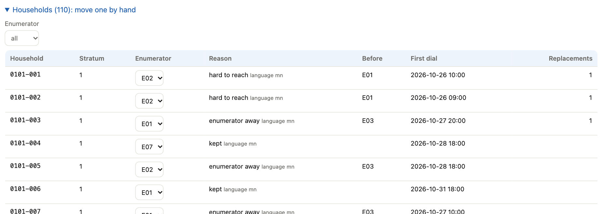
Households without a last interview are planned at the program's best hours from earlier rounds (Section 3.5.1). New households, households switched as hard to reach and households in the high dropout tier (B18) get the earliest first dials.
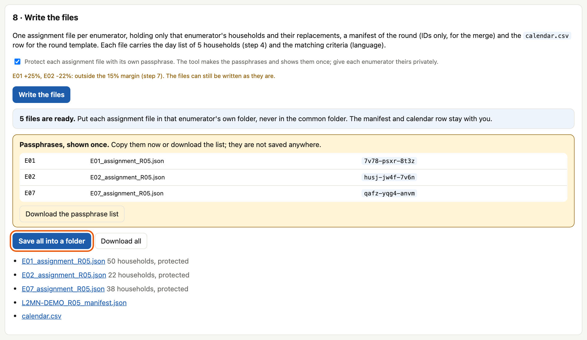
| File | Where it goes |
|---|---|
E01_assignment_R05.json, one per enumerator | Into that enumerator's own folder, never the common folder. Give the passphrase separately, privately |
L2MN-DEMO_R05_manifest.json | Stays with you: the merge checks every export against it (IDs only) |
calendar.csv | The round's row for the handbook's round template |
Click Save leader session to keep the inputs, settings, imports and every decision in one file,
leader_L2MN-DEMO_R05.json. To protect it, type a passphrase twice; leave both empty to save it
unprotected. The file holds the household list with its contacts: keep it in your own folder.
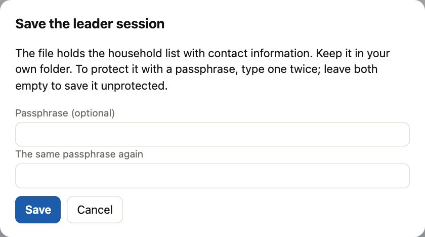
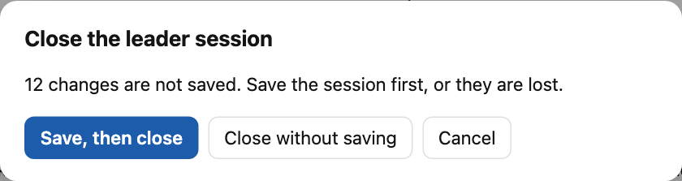
Whenever you want to see progress, open the Import logs tab.
.json and .csv files, and any contacts files they gave you. Adding older exports does no
harm: the newest export of each enumerator is used.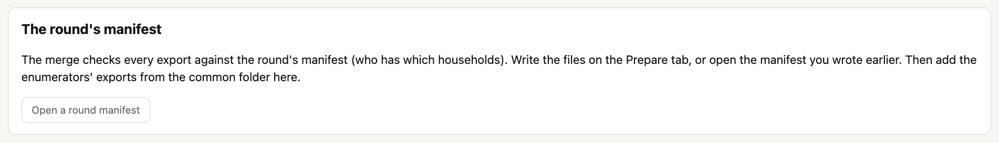
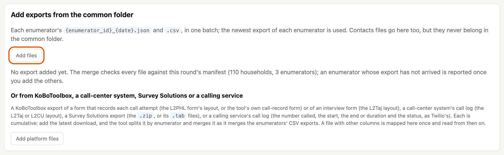
The merge never decides silently. Each situation it finds is a line in the merge report; those that need you appear under Needs your decision, with a button for each choice and an optional note. A decision is logged with who took it and when, and can be reviewed in the report.
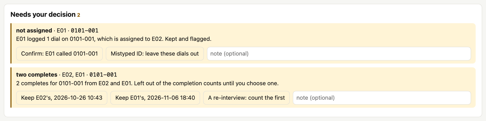
| Situation | What the tool does | What you decide |
|---|---|---|
| No export from an enumerator | Their households show as “not reported”, apart from completes and misses | Ask for the export |
| The same file added twice | The copy is ignored and noted | Nothing |
| Two exports from one enumerator | The later export is used; the earlier is noted. Dials the later one lacks are kept and flagged | For a gap: keep the dials, or leave them out if they were voided |
| Dials on a household assigned to someone else | Kept and flagged | Confirm the call, or mark a mistyped ID |
| Two completes for one household | Both kept, left out of the completion counts | Keep one, or count a re-interview |
| A file changed after export | Its integrity check fails; a differing entry is left out of the counts | Choose which version to use |
| A file from another round or program | Not merged | Open it in that round's session |
| A CSV without its JSON | Used as unverified when it is the latest export | Ask for the JSON when possible |
| Times that cannot be right | Flagged, kept | Check the enumerator's computer clock |
The Files table shows how each file was used. Download the merge report keeps the record of every situation, the rule applied and your decisions.
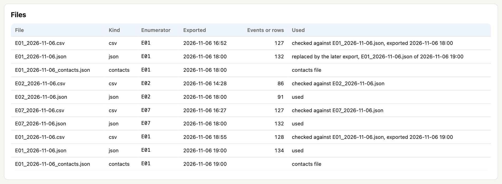
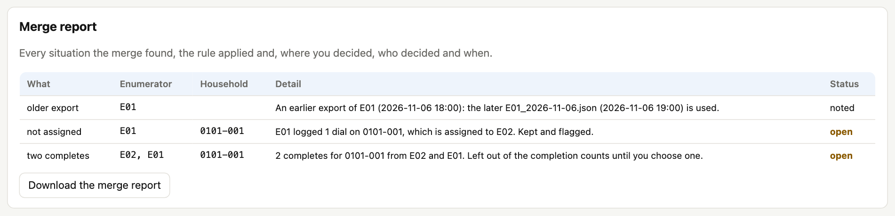
Numbers that enumerators added or corrected arrive in their contacts files. Download contact updates gives them in one table; move them into the household list for the next round. The file holds phone numbers: keep it in your own folder.
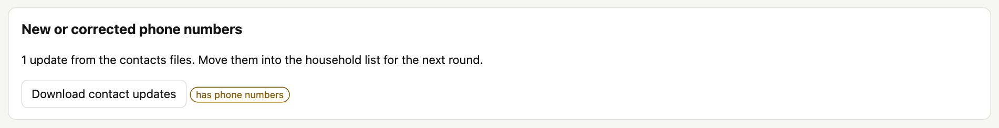
The Progress tab follows the round:
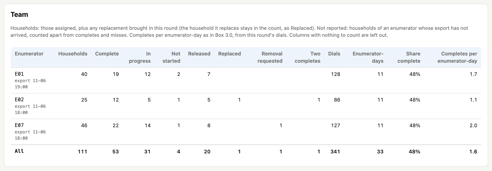
Part-way through the round, the card Move waiting households shows, for each enumerator, the completes per enumerator-day so far (the pace), how many they can still complete in the working days left, and whether they are short or have spare days at that pace. Only enumerators whose latest export is from today, with two or more enumerator-days, are judged; tick the box to judge earlier exports too.
No household is in two files, and no double call goes unnoticed: a moved household carries the dials its previous enumerator made, which count toward the dial cap, and in the merge the previous enumerator's dials up to the move are theirs while any made after it is flagged for you to keep or leave out.
The Call log tab shows the merged call log, filtered by enumerator, result or household, and writes the round's files:
| Button | File | Use |
|---|---|---|
| Merged call log (CSV) | L2MN-DEMO_R05_calls.csv | Every dial, in the handbook's harmonized dial columns; the handbook's analysis scripts and this tool read it as an earlier round |
| Actions (CSV) | L2MN-DEMO_R05_actions.csv | Releases, switch and removal requests, replacements |
| interviews.csv | interviews.csv | One row per household for the handbook's round template (Section 4.2) |
| outcome_codes.csv | outcome_codes.csv | The outcome codes and their meanings, for the template's configuration |
| calendar.csv | calendar.csv | The round's window, for the template |
| Manifest | L2MN-DEMO_R05_manifest.json | The round's assignment, IDs only |
With earlier rounds loaded (step 2), the Analytics tab computes the handbook's measures, with the same definitions as its scripts. All measures are unweighted. The attrition measures use closed rounds only; the round under way appears as “so far”.
| Section | Measures |
|---|---|
| Continuation and retention (Box 2.0, Section 3.4.3) | Continuation round to round, retention of the first-round sample, retention by rounds since joining, cohorts |
| Loss and returns (Section 3.4.3) | Loss by rounds since joining, returns within three rounds, recruitment waves |
| Dials per complete (Section 3.3) | Dials per complete, completion, first-dial success, hazard by dial, missed households redialed |
| Productivity (Section 3.1) | Completes per enumerator-day, dial minutes, attendance, by enumerator |
| Timing (Section 3.5) | Success by hour, best and busiest hours, weekdays, the first dial against the last interview's time, continuity, holidays, Ramadan |
The Risk lists tab is for the leader only. Two models rank households to order the work:
Tiers are tied to workload: within the round, the top 15% by score are high, the next 35% medium and the rest low (the return model has only high and low). A tier says how similar households fared; it is never a prediction about one household and never a reason to drop one (Section 3.3.5). Enumerators never see tiers, and tiers are not written into assignment files; the high dropout tier only gets earlier first dials in the plan. The models use operational features only, never demographic ones.
Each list shows the household, its enumerator, its tier, its score against the round's average, and what moves the score most. Use the tier buttons to filter, and Download this list to keep it.
This program's own data. Applied to a new program, the models rank households usefully but their chances are not calibrated, so the list shows a score, not a chance. Once two rounds have outcomes, click Backtest on this program's own rounds. The tool reads the result out in words, from the backtest's 95% interval:
Choose use on a version only if the backtest supports it; the switch is logged. The model card at the bottom of the tab gives the training data, the features, the backtests and the models' limits.
| When | Leader | Enumerators |
|---|---|---|
| Before the round | Steps 1 to 8; give out the files and passphrases; save the session | Open their assignment; check the Today tab and the Calendar |
| Each working day | Import the exports; settle merge questions; read Progress | Call, log, save; export at the end of the day |
| When an enumerator is away | Move their households by hand or prepare an updated assignment for the others | Load the updated assignment |
| End of the round | Import the final exports; write the round's files; move contact updates into the household list | Export a final time |
| Next round | Load this round's merged files as an earlier round (step 2) | Open the new assignment |
| Message | What to do |
|---|---|
| “Enter the rotation share for this round…” | Enter a share under the default rule; it has no default |
| “Set the dial cap, the program's stopping rule (step 4).” | Enter the dial cap; a first round has no earlier manifest to take it from |
| “A setting changed after the rule was applied…” | Click Apply the rule again, then write the files again |
| “… IDs were written in scientific notation…” | Update rtmtools in Stata (ado update rtmtools, update) and export the selection again |
| “No export from E07 for this round.” | Ask the enumerator to export, then add the file |
| A file's integrity check fails | Ask for a fresh export; choose a version for each differing entry |
Every L2 program with phone rounds interviews in KoBoToolbox, and they record their calls in two ways. The Philippines program submits its interview form once per call attempt, whether or not anyone answered. The Central Asian programs record no attempts in the form: a call-center system holds the sample, shows each operator the households to call, dials, and logs every attempt with a status code; the form records the interview only. In both cases the leader's side of this tool works the same: you prepare the round, give the platform its list, import each day's export, follow progress and move households during the round. The tool reads the platform's export as it is and writes the list in the platform's layout. Nothing is typed twice.
What a program needs: its form as it is, the household list in the tool's columns (B3), the team (B7) with each enumerator's code in the platform, and, for a form the tool does not know, the mapping of its columns and codes once (C4). Each round: write the files (B10), give the platform its list (C5), and each day drop the platform's export on the Import tab.
The Philippines program's form asks, before the interview, the interviewer's ID, the household (picked from the sample list in the form's choices sheet), the attempt number and whether someone answered; after the interview or instead of it, the result of the call in ten codes (complete; partially complete with or without a callback; not started, callback scheduled; refused; nobody answering; number does not exist; phone off; household unknown; reference person cannot connect) and remarks. KoBoToolbox adds the time the form was opened and submitted.
Download the data (Data › Downloads › CSV with XML values and headers, or the project's synchronous export link) and add it under Add platform files on the Import tab. The tool recognises the columns, reads each submission as one dial with the result mapped onto the codes of Part A (R1: the program's "partially complete, no more callback" counts as a complete, as the program counts it), splits the file by interviewer and merges each part as it merges a CSV export (B13): unverified, cumulative, the latest file used, every merge question raised where it applies. A complete needs a form open for three minutes or more.
What goes back: on the Call log tab, choices_households.csv is the sample list in the layout of
the form's choices sheet, one row per household and unused replacement, with the interviewer's platform code in
filter_int_id. Paste it over the form's list and redeploy; with a choice_filter of
filter_int_id = ${int_id} on the household question, each interviewer sees only their households.
The list has no phone numbers.
The Tajikistan program's system exports one semicolon-separated table, cumulative across rounds: operator,
household, round, number dialed, start, end, a comment and a status code (SCS successful,
NOA no answer, NOT no time, NWR non-working number, WNM wrong
number, OOS out of service, ITR interrupted, RFS refused; two codes without a
label in the files seen are read as "other" until the program names them). Add the day's download under
Add platform files: only the round's rows are read, the operators' codes become the enumerators'
IDs, the times are placed in the round's time zone, and the number dialed becomes the household's slot (number 1, 2
or 3) through the household list, which must be open; the number itself is not kept. The Uzbekistan program's system
exports a similar table with its own codes, which the tool reads too.
The interview form of such a program records no attempts, so its export is not counted as calls. Added with the log, it is checked against it: each interview with consent is matched to a completed call of its household within three hours of its start; an interview without one, and a completed call without an interview, are listed under Needs your decision (count it, keep it, or recode it as "other"), and the Import tab sums up the matching. Without a log, the form's export is read as the completes and refusals.
What goes back: cati_assignments.csv, the assignment table for the system, one row per household and unused replacement with the operator's code, the planned first dial, the numbers and the replacement links. It holds phone numbers and goes to the system only.
A file whose columns match none of the layouts above is not merged; the Import tab shows a card for it instead (Figure C4). Say whether a row is a call attempt or an interview, which column plays each role (household, enumerator, start and result are needed; end, attempt, callback, number dialed, round, record ID, submission time and note are optional), and what each value of the result column means, chosen from the results of R1; the card lists the values with their counts. Save the mapping and merge the file keeps the mapping in your session, so that every later file with the same columns is read without asking.
choices_households.csv (a form with its list in the choices sheet),
cati_assignments.csv (a call-center system), households.csv (the tool's own form, C6) or
assignments.tab (Survey Solutions), and give it to the platform.No L2 program used either; both are read as their documentation describes. A team without a form of its own can
use the tool's call-record form, formats/kobo/rtm_call_record.xlsx (one submission per call, the
household picked from the media file households.csv that the Call log tab writes), or the same
questionnaire built in Survey Solutions Designer from formats/suso/README.md, whose assignments upload
assignments.tab the tool writes and whose export zip it opens in the browser. Where calls go through an
internet calling service, its call log is a second witness: the example is Twilio Programmable Voice, whose Call
resource gives for every call the number called, the start and end, the duration and the status; the tool matches
each service call to a recorded call by the household's number and a start within three minutes, fills a call end
the enumerator left blank, lists the calls to a panel number that nobody recorded, and counts the calls to numbers
outside the list. The numbers never leave your computer.
The samples: samples/kobo/ holds the synthetic program's round-5 calls in the Philippines layout
(340 submissions, the same calls as the exports of Part B) and the interview form's export in the Tajikistan layout;
samples/cati/ the call-center log in the Tajikistan layout (717 rows, 340 of round 5) and the
assignment table; samples/suso/ and samples/calls/ the Survey Solutions export and the
service's log. Every phone number uses the invalid country code +000.
| Result | Code | Use it when |
|---|---|---|
| Complete | COMPLETE | The interview was completed (3 minutes or more counts, Box 3.0) |
| Appointment booked | APPOINTMENT | The respondent agreed a time: enter it as the callback time |
| Partial interview | PARTIAL | The interview started but did not finish |
| Respondent not available | NOT_AVAILABLE | Someone answered, but not the respondent |
| No answer | NO_ANSWER | The phone rang without an answer |
| Busy | BUSY | The line was busy |
| Switched off / unreachable | SWITCHED_OFF | The phone was off or out of reach |
| Number not in service | DEAD_NUMBER | The number does not exist or is disconnected |
| Wrong number | WRONG_NUMBER | The number is not the household's |
| Refusal (may retry) | REFUSAL_SOFT | A refusal for now; a later call may succeed |
| Refusal (do not retry) | REFUSAL_HARD | A firm refusal: release the household for the round |
| Language barrier | LANGUAGE | The respondent and you share no language |
| Other (write a note) | OTHER | None of the above; a note is required |
| Reason | What the enumerator reads |
|---|---|
keep | Kept with you: you interviewed it last round (or in an earlier round, or you had it last round) |
rotation | Rotation: part of the planned share moved between enumerators |
switch_hard_to_reach | Switched to you: hard to reach with the previous enumerator |
enumerator_unavailable | Moved to you: the previous enumerator is away |
new | New to the panel |
rule | Dealt to you at random, or placed with you by a block of the list, by the round's rule |
manual | Assigned by hand |
capacity | Moved to balance workloads |
match | Matched to you by your leader's criteria (language, sex or area), with the household's values |
mid_round | Moved to you during the round from another enumerator, so that the round finishes on time |
replacement | Replacement household |
| File | Written by | Read by | Folder | Contacts? |
|---|---|---|---|---|
Household list (.csv or .xlsx) | The program | Leader | Leader's own | Yes |
selection.csv or a replacement list | The sampling tool or the program | Leader | Leader's own | No |
E07_assignment_R05.json | Leader | Enumerator E07 | E07's own | Yes, E07's households only |
L2MN-DEMO_R05_manifest.json | Leader | Leader (merge) | Leader's own | No |
E07_project_R05.json (saved session) | Enumerator | Enumerator | E07's own | Yes |
E07_2026-10-27.csv and .json (export) | Enumerator | Leader | Common | No |
E07_2026-10-27_contacts.json | Enumerator | Leader | Given to the leader directly | Yes |
leader_L2MN-DEMO_R05.json (leader session) | Leader | Leader | Leader's own | Yes |
_calls.csv, _actions.csv, interviews.csv, calendar.csv, outcome_codes.csv, _merge_report.csv | Leader | The handbook's scripts and template; next round's leader | Leader's own | No |
_contact_updates.csv | Leader | Leader | Leader's own | Yes |
| A platform's export: a KoBoToolbox form submitted per call attempt or per interview, a call-center system's log, a Survey Solutions export, a calling service's log (Part C) | The platform | Leader (Import tab) | Leader's own | Usually yes: never the common folder |
choices_households.csv, cati_assignments.csv, households.csv, assignments.tab | Leader | The platform | Given to the platform only | All but the choices list |
_risk_dropout.csv, _risk_return.csv | Leader | Leader | Leader's own | No |
The file formats are defined in formats/README.md, and formats/check_formats.py checks any
file against them.